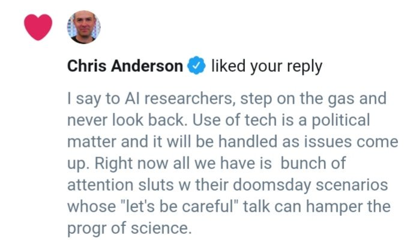

Cuomo saz he'll run if Biden doesnt?.. hmm
Bloomberg is out. Great.
Yea - there ain't enough cowshit to fuel such transport (assuming the translation worked). H2@Scale has the right idea. Everything into H2, and that into consumption.
"2) biofuel production will not scale to meet the demand ...flying 2-fold by 2030 "
This is may be as important as Yang's UBI policy
I used to take a victory lap every time one of these stories came out. It felt good to see history vindicate my decision to expose the government's wrongdoing. Nowadays I just wish it hadn't taken me so long to speak up. If only I hadn't been so afraid. https://t.co/RiVl6cdwlz
— Edward Snowden (@Snowden) March 5, 2019
@markrittman
Three months into using a Pixelbook as my main consulting and dev laptop, doing @LookerData + @SnowflakeDB dev in the cloud and running http://getdbt.com from the built-in Linux CLI. One-third the cost of an Apple MBP, instant-on and a keyboard you can actually type on
But.. but.. I did some space stuff, doesn't the coolness from there rub off on the car stuff..?
No it doesn't, punk. You have to perform equally on both to be applauded equally.
This guy..
Sheeet

The US DOE has announced $31 million in funding to enable large-scale #hydrogen generation, storage, transportation, and utilization of #H2 energy.
— H2 & Fuel Cell News (@H2NewsGlobal) March 4, 2019
“Hydrogen is an energy carrier that can unite our Nation’s abundant #energy resources,” said Rick Perry.https://t.co/uGzLDEX1gU pic.twitter.com/GbrZAGuvVp
Geostorm; watchable. I like the "marry her" scene.
Bezos really needs to get out of MSM biz. Sell WaPo. Get out.
@zuph
me at 19: why would someone with a cool stem degree want to sell kombucha at the farmers market or run a yarn store?
me at 30: ohhhhhhhh
Man that H2@Scale news went off in my feed like a bomb. Kaboom!
I had seen a co press conference btw Perry and Birol (IEA) earlier. Perry was mega praising Birol, complimenting like mad. I was like WTH? ... WH must have told him so. This announcement makes sense now.
Hydrogen is an energy carrier that can unite our Nation’s abundant energy resources and the H2@Scale Initiative will help @ENERGY achieve our goals of strengthening energy security, resiliency, and a strong domestic economy. https://t.co/yznfIJTUrs pic.twitter.com/0W2wsy2Yi4
— Rick Perry (@SecretaryPerry) March 4, 2019
— Dan Kaminsky (@dakami) March 3, 2019
You are in Hanoi. And I am annoyed.
That joke totally killed man.
Easily in the top 5.
Ahaha - just saw a Bill G. prediction saying that "spam will be solved in two years" . Like.. over 10 yrs ago.
Spam is more than 90% of all mail now.. So maybe it's spammers sitting around thinking "email will be solved in two years".
How to start a business:
- Find a problem
- Create a solution for it
- Profit
Apple:
- Create a problem
- Sell an adapter for it
- Profit
My tigga hangin w honchos. Yieah. 🤙
IEA is hard-core pro hydrogen BTW. And Perry is ... Perry. From Texas.
Enjoyed having my good friend @IEABirol in Washington , D.C. this week. He is seen here with @SecretaryPerry discussing global energy markets and the future of American energy. pic.twitter.com/JzbVU94R5I
— Ted Garrish (@IntlAffairsDOE) March 1, 2019
I wouldnt worry abt Don Jr's future in politics. I'd look closer at Kush. I think he'll end up staying in politics. Not as prez or other cand but in unelected posts. Secretary Kush. Trade rep Kush.
Britain "pondered the TR model". Why? Bcz it has free-trade deal but no freedom of mvmt in EU?
Maybe .. that'd work but Brexibitches might not like that either because then they would be "rule takers" right? "We want to shape the rules". Great. But that's called BEING IN EU.
The Paki thing could even be Iran related.
We've gone from "it's only good for drugs and gambling" to "well it's not like EVERY Venezuelan is using it" quicker than I could have imagined
@StartsWithABang
Relativity Wasn't Einstein's Miracle; It Was Waiting In Plain Sight For 71 Years
It wasn't the Michelson-Morley experiment, the Lorentz transformation, or the twin paradox that led Einstein's thoughts to relativity, but an 1834 experiment by Faraday.
I wanted to make this point b4. What I dont like is fuckin MMT sausage-making-tied-to-$$-printing. As in any piece of legislation being able to print money into existence. That is a no-no.
But for a controlled, 1-shot legislation, whose infl effect will be limited, it can be ok
Parteh
The electric clam (Ctenoides ales) — also known as the disco scallop 🕺🏻 — is found in the tropical waters of the Indo-Pacific. It is the only bivalve known to have light displays. pic.twitter.com/zXk1Mrnxyh
— Dorsa Amir (@DorsaAmir) February 28, 2019
@morganhousel
"When you first study a field, it seems like you have to memorize a zillion things. You don't. What you need is to identify the 3-5 core principles that govern the field. The million things you thought you had to memorize are various combinations of the core principles." -J. Reed
I'll have you know, in his own way, FED chief Powell is pushing for M4A. At nearly every public speech he bashes "our unique way of delivering healthcare". This is code for "current system sucks"; which means a nod for M4A.
Cohen seemed to be on a book-tour instead of a testimony. "He wont leave even if unelected", "liar, cheater", etc. Flammatory language, legally unactionable, but targeting a particular segment of Bill Maher panelists with their "cacerolada", empty anger but with some money.
We don’t have enough Lithium and Cobalt on planet earth to meet the needs required to store enough wind and solar power energy to meet electricity demands without using hydrogen storage. pic.twitter.com/tsZ7rRvkCw
— Renewable Energy Expert (@CharlesLove14) February 26, 2019
I still think Pakis should never have been seperated from India. An Indian state is independent enough while in the meantime fully independent Pakis cant seem to govern themselves. Recently things had improved but it's been long-running shitshow.
C'mon, Italians do it too
"@guardian
Rami Malek lined up as Bond 25 villain after Oscars win
@KarlreMarks
This is the film industry's highest 'honour' for an actor of Middle Eastern origin: cast them as a Bond villain."
Hmm.. code for work is WHO YOU ARE; but if ppl are working on what they like, wout pay, I wonder if that still counts. So UBI could be fine in that sense.
The code for money is PROOF tho, so that could be a problem. Unless money eventually received from work while being supported by UBI is sold as a positive.
This is how you deal with codes; u dont solve based on them, only morons do that, think culturally. U sell to them.
There is no way 1st attack was triggered by Imran Khan.
“Experiments in Robotic Catching” (1991-1995)
Cool work done by Jean-Jacques Slotine's Nonlinear Systems Laboratory at MIT more than 20 years ago. Their website also looks like it was created at around that time:
“May’s lawyer admits the EU referendum was unlawful”
"Well.
That’s fucking awkward.
Do please RT."
@markcadams
Anyone know whatever happened to the Axis of Evil? Those guys used to be huge.
People of cold or mountaineous places arent better against cold or good at climbing. They dress better, and learn to orient.
Haha.. good move - very kung-fu.
AY is Taiwanese-American (2nd gen), not mainland Chinese.
Looking better every day, this guy.. good good.
Goldcuck, sorry goldbug, is right on one thing. US looks like a colony of China, where US sends raw, farm products, and in return gets finished, manufactured products.
Did manufacturing come back to US lately? Will the new deal allow exporting of services? Kinda hard but maybe.
@H2Europe
"Belgian scientists are cracking the code for affordable #greenhydrogen: Researchers from the @LeuvenU have succeeded in developing a special #solar panel that makes #hydrogen gas from the moisture in the air. (article in NL) #HydrogenNow @KU_Leuven"
@HexagonASA
We are excited to announce that Audi has selected us for a #hydrogen development project
Orienteering
Of course it's a thing in Norway.
"In 1959 Swiss men took part in a referendum on whether women should be allowed to vote in general elections. Two-thirds said no. Women didn't get the vote until 1971"
Yeah you did ...
So I have a friend, he thinks u did the announce, then grabbed it.
"When Satoshi announced the first release of the software, I grabbed it right away" - Finney
The teens who listen to "mallwave" are nostalgic for an experience they’ve never had -- @HKesvani/@WeAreMel https://t.co/dyiM4SNatq
— Digg (@digg) January 31, 2019
Great gif
For all you fucksticks who spewed shit at me, my dog, my mom, my mom’s dog, my dog's mom, my head size, body size, intelligence, my mom’s intelligence all because I missed a couple hammer locks save your ridiculous fuckin insults for shit that matters in life. pic.twitter.com/7CaZtSvmq2
— 🤑 MIKEY LOCKS 🤑 (@Mikey_Locks) February 14, 2019
World is getting freakier but occasionaly, it is hilarious.
@myusuf3
"you fools who like mayo with their fries must be loving this. long ketchup."
@bkjones
Replying to @myusuf3 @KraftHeinzCo
The SEC no doubt caught wind of “mayochup”.
you fools who like mayo with their fries must be loving this. long ketchup. pic.twitter.com/u1QrNDsnd9
— Mahdi Yusuf (@myusuf3) February 22, 2019
Mot..f..ka u didnt know a goddamn thing abt any of that. Who u bullshitting now? Here talk to the hand ✋. It'll listen to you.
"When I voted 4 Brexit I was fine with WTO terms"
"Telecom Companies Are Seriously Overhyping 5G Networks
The marketing gimmicks would be hilarious if they didn’t come with potentially major consequences."
Pervasive computing is not all abt AI BTW. Being able to do scientific computing at scale, on the go is. U can compute some crazy PDE on mobile now.. fluid dynamics, heat eqn, wavefront dynamics (which can be used as shortest path algo). How cool is dat?
Right; US has Blackwater. And Russia has Wagner Group.
If you can't tie your shoes because they got an update: you deserve this
— Internet of Shit (@internetofshit) February 25, 2019
"the sneaker can’t be tightened or properly worn" because there's a bug in an update
— Internet of Shit (@internetofshit) February 25, 2019
what a time to be alive
https://t.co/RnApmNGsi6
Most observers believe Maduro’s dictatorship collapses soon. Millions of Venezuelan expatriates eagerly hope for his demise. Millions in the country starve or face military oppression and death. https://buff.ly/2tEpLLA #Venezuela #Cuba #Maduro #Guiado